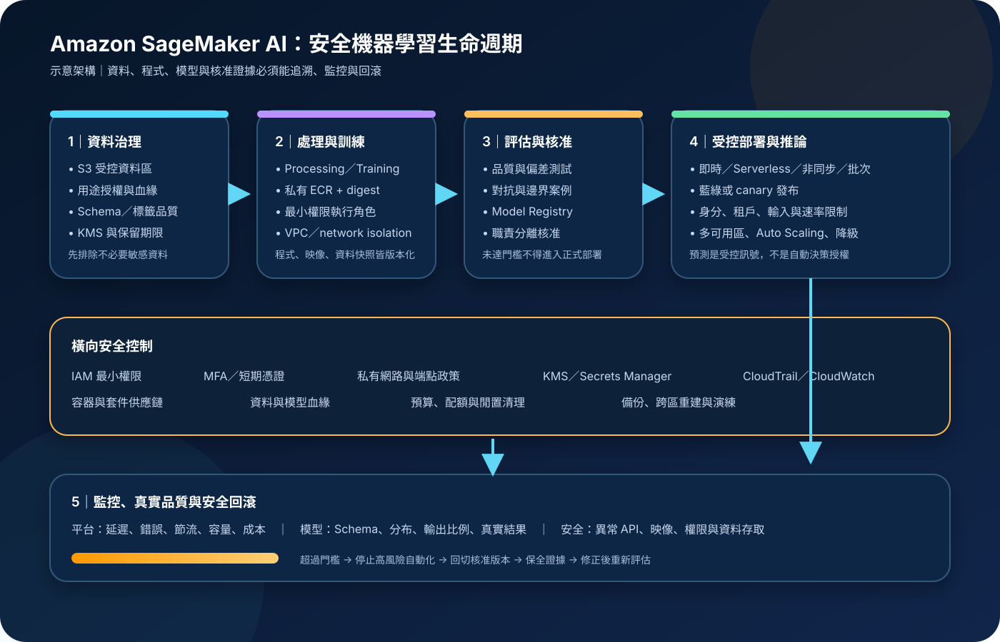

Amazon SageMaker AI：模型生命週期、MLOps 與安全治理
Amazon SageMaker AI 是用來建置、訓練與部署機器學習模型的全受管服務，涵蓋開發環境、訓練工作、模型登錄、推論及多項治理工具。AWS 管理服務基礎設施，但不會代替資料合法性、特徵品質、模型風險、執行角色、容器供應鏈、預測使用方式或復原責任。
作者：Dr. William｜查閱與發布：2026-10-07
服務定位
Amazon SageMaker AI 提供受管的機器學習開發與執行環境，讓團隊以內建演算法、開源框架、自有程式或容器處理資料、訓練模型，並將模型部署為即時、無伺服器、非同步或批次推論。2024 年 12 月後，原稱 Amazon SageMaker 的機器學習服務改名為 Amazon SageMaker AI；API、CLI、端點及許多資源名稱仍保留 sagemaker 命名。
SageMaker AI 不是自動保證模型正確、公平、可解釋或符合法規的系統。受管訓練不會修正錯誤標籤，模型登錄不等於核准合理，部署成功也不代表預測能直接驅動高影響決策。資料擁有者、模型負責人、安全團隊與業務核准者仍須建立可追溯的控制與停止條件。
核心概念與服務邊界
建置、訓練與登錄
- Studio 與開發環境：提供整合式工具存取 notebook、資料、訓練與部署；Domain、user profile、space、執行角色及網路模式須明確治理。
- Processing：以暫時性受管運算執行資料前處理、特徵工程、評估或自訂分析；輸入、輸出及映像通常與 S3、ECR 整合。
- Training job：依映像、程式、資料位置、執行角色、實例、網路與輸出設定建立隔離工作，結束後保存模型產物與指標。
- Pipelines：把處理、訓練、評估、條件判斷與模型登錄串成可重複工作流程；流程定義仍須版本化並經程式碼審查。
- Model Registry：管理模型群組、版本、指標、血緣與核准狀態，支援部署及 CI/CD；核准狀態應由獨立控制與證據驅動。
- Clarify：可協助進行偏差與特徵歸因分析；結果取決於資料、問題定義、基準與方法，不能單獨證明公平。
推論、監控與治理
- Real-time endpoint：適合互動式低延遲推論，可搭配多可用區實例配置與 Auto Scaling；端點仍須容量、健康與降級設計。
- Serverless Inference：由服務管理基礎設施與擴縮，適合有閒置期且可接受冷啟動的流量；區域、記憶體與功能限制須先確認。
- Asynchronous Inference：以佇列處理較大請求或較長時間工作，結果寫入 S3；應處理重複請求、失敗通知與資料保留。
- Batch Transform：針對離線資料集執行批次推論，不維持常駐端點；需驗證分片、輸出對應與失敗重跑。
- Model Monitor：既有客戶可用於資料與模型品質監控，但 AWS 官方文件已標示不再開放新客戶，且不規劃新增功能；新架構不得把它視為必然可採用的唯一方案。
- CloudWatch、CloudTrail 與 EventBridge：分別處理指標日誌、API 稽核與狀態事件。CloudTrail 不等於完整推論內容稽核，Runtime InvokeEndpoint 的紀錄邊界須依官方說明另行驗證。
適合與不適合的使用情境
適合
- 團隊需要以受管工作建立可重複的資料處理、訓練、評估、模型核准與部署流程。
- 需要使用自有演算法、開源框架或容器，又希望減少自行管理訓練叢集與推論主機的負擔。
- 模型需搭配版本、指標、血緣、核准狀態、部署紀錄與回滾程序。
- 推論流量具有即時、無伺服器、非同步或批次等不同特性，需要依延遲與成本選型。
- 組織已能治理 S3、ECR、IAM、KMS、VPC、CloudTrail、CloudWatch、資料分類與軟體供應鏈。
不適合或不能單獨完成
- 缺乏可驗證資料來源、標籤品質、用途授權與保留規則，卻希望平台自動產生可信模型。
- 只需要呼叫既有基礎模型 API，沒有自訂訓練、推論容器或完整 MLOps 需求；此時應比較 Amazon Bedrock 或其他較簡化方案。
- 要求模型輸出完全可重現、零錯誤或能直接作為醫療、金融、法律、人事等高影響決策，卻沒有規則、證據與人工覆核。
- 沒有能力維護容器、套件、模型、特徵及訓練程式的版本與漏洞修補。
- 工作負載極小且固定，受管服務整合、日誌、網路端點與治理成本高於簡單替代方案。
示意故事案例：設備異常風險模型
以下為示意案例，不代表特定企業或正式部署。 一家製造公司希望預測廠內設備未來 24 小時的異常風險。資料工程流程先將已核准的感測資料寫入受控 S3 bucket，依產線與環境分區，使用 KMS 加密並保留資料血緣。任何姓名、員工識別碼與非必要欄位在進入訓練區前移除；資料擁有者核准用途與保存期限。
每日 Pipeline 先執行 schema、缺值、異常值與時間洩漏檢查，再建立特徵並啟動 Training job。訓練容器來自私有 ECR，映像以 digest 固定並完成弱點掃描；工作使用獨立最小權限 execution role、私有 subnet、VPC endpoint 與 KMS key，不保存長期 Access Key。評估步驟比較召回率、誤報率、不同產線表現與成本；只有通過門檻且取得模型負責人核准的版本才能進入 Model Registry 的核准狀態。
核准模型以藍綠方式部署到多可用區即時端點。應用只把分數當作維修排序訊號，不自動停機；值班人員需查看感測趨勢與設備狀態後確認。系統監控延遲、錯誤、容量、輸入分布、預測比例及後續真實結果；若資料契約破壞、誤報暴增或模型版本異常，流量立即回切前一版本，並由事件流程封存證據。

建置與運作流程
- 界定用途與影響：記錄預測對象、資料擁有者、使用者、禁止用途、可接受錯誤、人工覆核、RTO、RPO 與停止條件。
- 建立帳戶與身分邊界：分開開發、測試與正式環境；人員使用聯合登入、MFA 與短期工作階段，工作負載使用 IAM role。
- 治理開發環境：限制可建立 Domain、user profile、space、app、notebook 與 presigned URL 的角色；正式資料不得任意下載到個人環境。
- 建立資料契約：定義 schema、擁有者、來源、授權、品質門檻、標籤方法、保留與刪除規則，並檢查訓練與推論資料偏差。
- 保護儲存與機密：S3、EBS、EFS 與模型產物使用適當 KMS 控制；資料庫密碼或 API 機密存於 Secrets Manager／Parameter Store，不放入 notebook、映像或參數。
- 管制容器與套件：私有 ECR 映像以 digest 固定，執行弱點與授權掃描，建立 SBOM，限制基底映像與外部套件來源。
- 設定網路路徑：依需求使用 VPC-only Studio、私有 subnet、security group、S3 gateway endpoint，以及 SageMaker API、Runtime、ECR、CloudWatch、STS、KMS 等介面端點。
- 建立最小權限角色：分開 Pipeline、Processing、Training、Model Registry、部署與 Runtime 權限；限制 S3 prefix、ECR repository、KMS key、模型與端點資源。
- 執行受控訓練：固定程式、映像、資料快照、超參數與隨機種子；依風險啟用 network isolation，並限制輸出與除錯日誌中的敏感資料。
- 設定品質門檻：除整體準確度外，評估召回率、精確率、校準、不同群體或場域表現、資料洩漏、對抗輸入與業務成本。
- 核准與部署：把模型、指標、資料版本、程式版本、風險與核准證據寫入 Registry 或外部治理系統；未核准版本不得進入正式環境。
- 選擇推論模式：依延遲、請求大小、執行時間、尖峰、冷啟動、資料位置與成本比較即時、無伺服器、非同步和批次方案。
- 安全發布：使用 IaC 與 CI/CD 建立端點，採 canary、藍綠或 shadow 驗證；設定逾時、有限重試、配額、Auto Scaling 與健康檢查。
- 監控模型與平台：監控延遲、錯誤、節流、實例、資料 schema、輸入分布、輸出比例、真實品質、成本及異常 API；新客戶需自行評估 Model Monitor 替代方案。
- 復原與退役：保存可重建的資料、映像、程式、模型與 IaC；演練回滾、區域重建、KMS 與依賴服務恢復，退役時刪除端點、資料副本與過期權限。
成本、可用性與維運考量
SageMaker AI 成本通常來自 Studio 或 notebook 運算、Processing、Training、超參數調校、模型編譯、即時端點、Serverless Inference、Asynchronous Inference、Batch Transform、儲存及資料處理。相依成本可能包含 S3、ECR、EBS、EFS、KMS、CloudWatch Logs、NAT Gateway、PrivateLink、資料傳輸、備份、CodePipeline 或第三方授權。正式估算須以查閱當日官方價格、區域、實例、加速器、訓練時間、端點副本、流量、日誌與保留量重新計算。
訓練可透過較合適的實例、Managed Spot Training、checkpoint、停止無效工作與刪除閒置開發資源降低成本。推論端應先量測模型記憶體、批次大小、並行度與延遲，再決定即時常駐、Auto Scaling、Serverless、非同步或批次。只降低單次運算價格可能增加冷啟動、重試、排隊或品質成本；Budget、Cost Anomaly Detection、資源標籤及每團隊配額應配合應用層使用限制。
即時端點可配置多個實例並分散於可用區，但高可用性仍取決於實例數、容量、容器啟動、Auto Scaling 速度、相依服務與應用降級。跨區不會自動複製 S3 資料、ECR 映像、模型版本、端點設定、KMS key、VPC endpoint、特徵來源與核准紀錄；第二區域須以 IaC 和受控複寫建立，並確認服務及實例可用性。
Amazon SageMaker AI 特有資安風險與控制
- Notebook 與 presigned URL 濫用：限制建立與分享權限、縮短工作階段、記錄 API、停用閒置資源，且不讓 notebook execution role 擁有廣泛資料或管理權限。
- 執行角色過寬：不同生命週期步驟使用獨立角色，限制 S3 prefix、ECR、KMS、端點與 PassRole；不得用單一管理角色涵蓋探索到正式部署。
- 容器供應鏈：只允許核准 registry 與 digest，掃描映像和套件、保存 SBOM、移除不必要工具，以簽章或部署政策阻擋未核准映像。
- 訓練資料投毒：驗證來源、schema、統計分布、標籤與重複資料，保留不可竄改血緣；高風險資料須雙人核准或隔離抽查。
- 時間或目標洩漏：切分資料時維持時間與實體邊界，禁止把部署後才會知道的欄位放入特徵；以獨立資料重做評估。
- 模型產物竄改：模型、程式、映像、資料與 IaC 都要版本化並保存 digest；部署前重新驗證核准狀態、來源帳戶與 KMS 存取。
- 外部網路外洩：對 Training、Processing 與 Hosting 配置 VPC，依適用性啟用 network isolation；同時管制 NAT、proxy、DNS、security group 與 VPC endpoint policy。
- 公開端點誤解：SageMaker Runtime endpoint 不等於完整的使用者驗證與業務授權；外層 API 必須執行身分、租戶、配額、輸入與 WAF 控制。
- 推論資料外洩：最小化 payload，避免將敏感內容寫入容器、data capture 或應用日誌；目的地使用 KMS、最小權限與短保留期限。
- 模型擷取與濫用：驗證呼叫者、限制速率與查詢量、監控異常輸入分布，並避免回傳不必要的機率、梯度或內部細節。
- 對抗輸入與資料漂移：建立邊界及惡意測試集，監控 schema、分布、輸出與真實品質；超過門檻時降級、轉人工或回滾。
- 模型核准被繞過：部署管線只接受指定 Model Registry 狀態和來源，核准與部署角色分離，所有例外都需時限與稽核。
- CloudTrail 覆蓋誤判：CloudTrail 提供控制面 API 稽核，但不能被當作所有推論請求與內容的完整證據；需另建受控應用稽核與隱私邊界。
- Model Monitor 可用性變更：新客戶不得假設可啟用該功能；監控架構應以可驗證的 CloudWatch、自訂處理工作或其他核准工具達成控制目標。
- 不安全的失敗切換：當區域、模型或特徵來源故障時，不得改用未核准版本、未加密資料或公開網路；高影響決策應安全停止。
共同責任邊界
AWS 負責 SageMaker AI 受管服務與底層雲端基礎設施安全，以及其責任範圍內的服務維護。客戶負責資料合法性與分類、程式及容器、模型選擇、Studio 與 Domain 設定、IAM、VPC、KMS、輸入輸出、模型品質、核准、監控、成本、備份與跨區復原。
客戶須落實 IAM 最小權限、人員 MFA 與工作負載短期憑證、網路隔離與公開存取控制、KMS 加密、Secrets Manager／Parameter Store、CloudTrail／CloudWatch、資料與模型備份及跨區復原。AWS 不會替客戶判斷資料是否可用於特定用途、模型是否公平可靠、容器是否含惡意程式、預測是否可直接執行，或備援區域能否在目標時間內恢復相同模型與治理狀態。
上線前可執行檢查清單
- □ 已記錄用途、影響、資料擁有者、模型負責人、禁止用途、人工覆核、RTO、RPO 與停止條件。
- □ 人員使用聯合登入與 MFA；所有工作負載使用 IAM role 與短期憑證，無長期機密寫入程式、notebook、映像、參數或日誌。
- □ Studio Domain、user profile、space、app、presigned URL 與 execution role 已限制建立、分享及存取範圍。
- □ 開發、測試與正式帳戶或權限邊界分離，Pipeline、Training、Registry、部署與 Runtime 角色各自最小化。
- □ S3、EBS、EFS、模型產物與日誌依資料分類使用 KMS，key policy、grant、輪替、停用與第二區域策略已驗證。
- □ Secrets Manager／Parameter Store 已保存必要機密，並設定輪替、讀取限制、存取告警與移除程序。
- □ 資料來源、用途授權、schema、品質、標籤、血緣、保留、刪除與去識別化規則已有負責人。
- □ 私有 ECR 映像已固定 digest、完成弱點與授權掃描、保存 SBOM，且部署政策阻擋未核准映像。
- □ VPC-only、私有 subnet、security group、S3、SageMaker API／Runtime、ECR、CloudWatch、STS 與 KMS 端點需求已測試。
- □ Training、Processing 與 Hosting 的 VPC configuration、network isolation、DNS 與 egress 行為已依實際工作驗證。
- □ 訓練可重現資訊包含資料快照、程式、映像、超參數、隨機種子、實例、指標與產物 digest。
- □ 已測試資料投毒、時間洩漏、類別失衡、缺值、邊界輸入、對抗輸入、不同群體或場域表現。
- □ Model Registry 或治理系統保存版本、指標、血緣、風險與核准證據；部署只接受核准來源。
- □ 推論 API 另有使用者驗證、租戶授權、schema 驗證、大小限制、速率限制、逾時、有限重試與 WAF 控制。
- □ Data capture、應用日誌與除錯輸出不保存不必要敏感資料，且目的地已加密、限制存取並設定保留期限。
- □ CloudTrail 已建立持續 trail；CloudWatch 已監控訓練、端點、延遲、錯誤、節流、容量、成本與安全事件。
- □ 已確認 Model Monitor 對目前帳戶是否可用；若不可用，已部署可驗證的資料與模型品質監控替代方案。
- □ 正式發布採 canary、藍綠或 shadow，且已驗證回滾、舊版本保留、資料相容與流量切換。
- □ Budget、Cost Anomaly Detection、標籤、閒置資源清理、訓練停止條件與端點 Auto Scaling 已設定。
- □ 第二區域的資料、映像、模型、IaC、IAM、KMS、VPC、端點設定、監控與核准證據可重建並已演練。
AWS 官方一手來源
- What is Amazon SageMaker AI?（查閱：2026-10-07）
- Amazon SageMaker AI Features（查閱：2026-10-07）
- Train a Model with Amazon SageMaker（查閱：2026-10-07）
- Deploy models for inference（查閱：2026-10-07）
- Model Registration Deployment with Model Registry（查閱：2026-10-07）
- SageMaker Model Building Pipelines（查閱：2026-10-07）
- Data and model quality monitoring with Amazon SageMaker Model Monitor（查閱：2026-10-07）
- Configure SageMaker Clarify Processing Jobs（查閱：2026-10-07）
- Security in Amazon SageMaker AI（查閱：2026-10-07）
- How Amazon SageMaker AI works with IAM（查閱：2026-10-07）
- Choose an Amazon VPC for a SageMaker AI domain（查閱：2026-10-07）
- Connect to SageMaker AI Within your VPC（查閱：2026-10-07）
- Run Training and Inference Containers in Internet-Free Mode（查閱：2026-10-07）
- Encryption at Rest in Amazon SageMaker AI（查閱：2026-10-07）
- Logging Amazon SageMaker AI API calls using AWS CloudTrail（查閱：2026-10-07）
- Monitor Amazon SageMaker AI with Amazon CloudWatch（查閱：2026-10-07）
- Resilience in Amazon SageMaker AI（查閱：2026-10-07）
- Amazon SageMaker AI Pricing（查閱：2026-10-07）
- AWS Well-Architected Machine Learning Lens（查閱：2026-10-07）
- AWS Well-Architected Security Pillar｜Shared responsibility（查閱：2026-10-07）
內容說明
本文依查閱日可用的 AWS 官方文件整理，作為基礎學習與架構討論材料；實際部署仍須依最新命名、區域、功能可用性、實例與配額、Model Monitor 帳戶資格、價格、資料用途、模型風險、法規及復原演練結果調整。